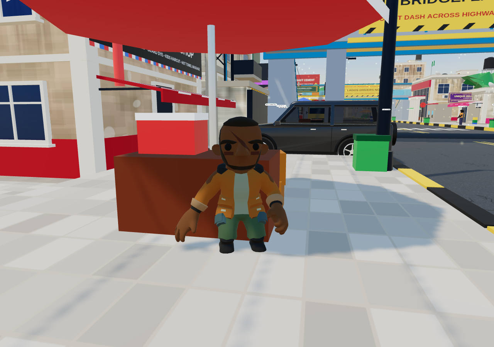
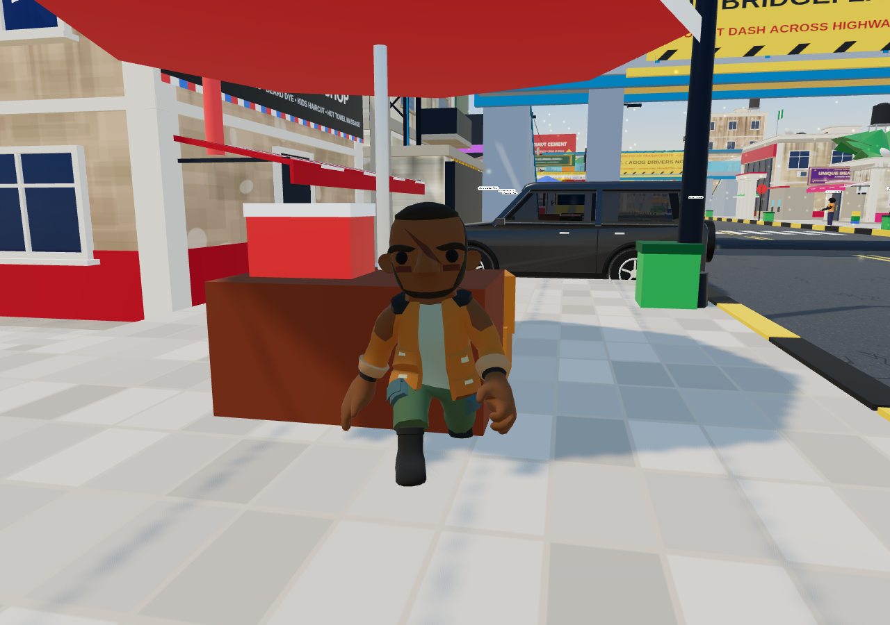
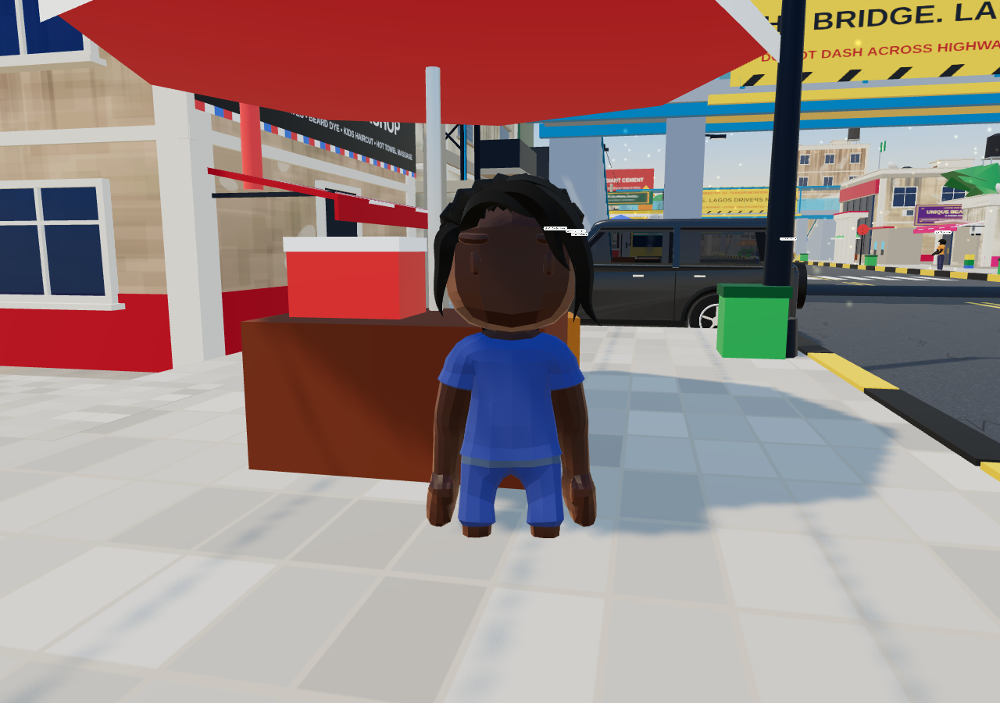

Skinned character pipeline
Player now loads authored skinned GLBs (Quaternius CC0) with AnimationMixer. PersonBuilder remains NPC/fallback. Docs: docs/CHARACTER-PIPELINE.md.
Male — Idle

Male — Walk

Female — Idle
